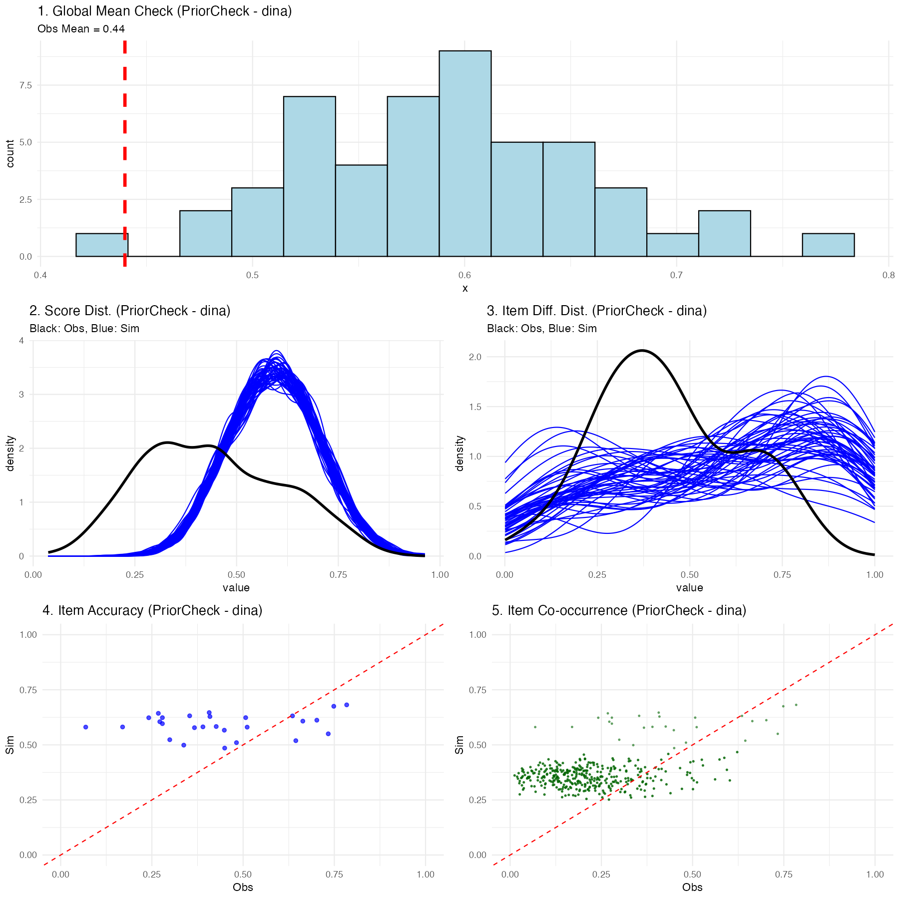
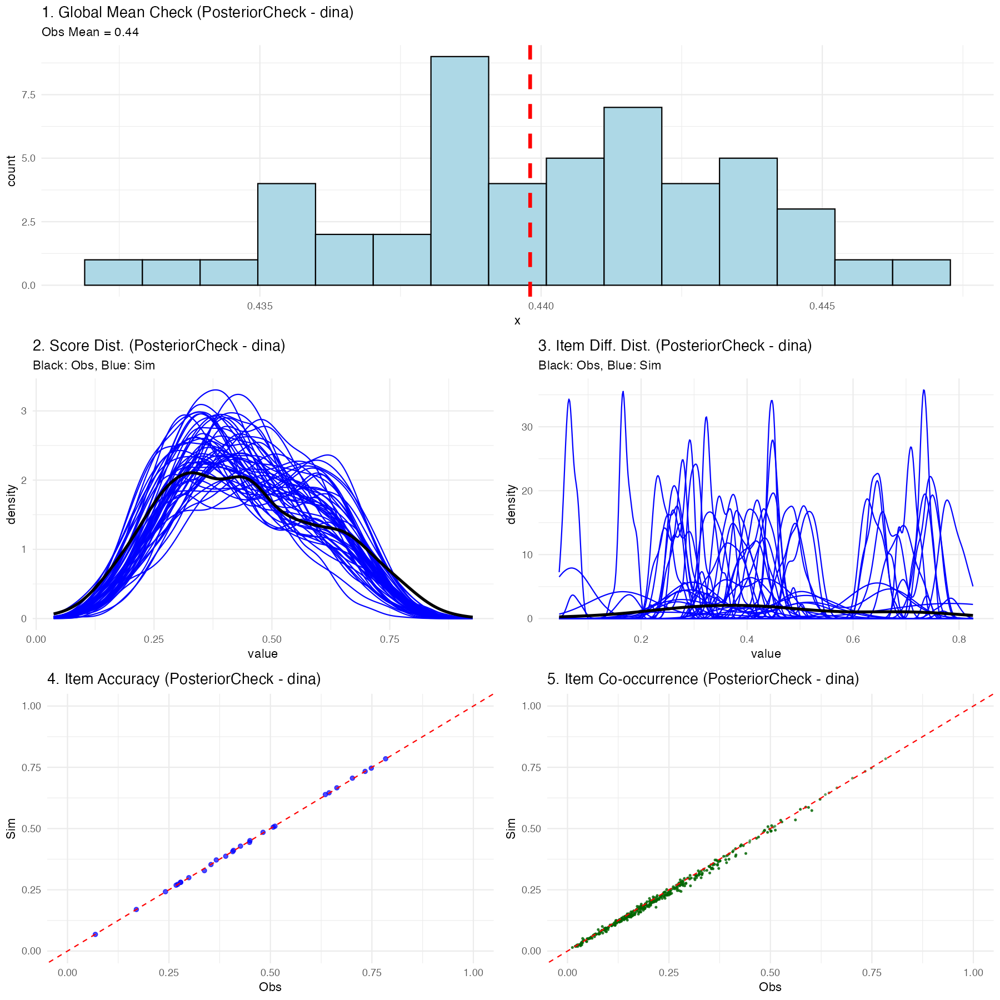

library(nimble)
library(pgdcm)
library(dcmdata)
library(MCMCvis)
# Load data and Q-Matrix
X <- dtmr_data
Q <- dtmr_qmatrix
# Build the graphical structure
g <- QMatrix2iGraph(Q)
# Generate Nimble configurations
config <- build_model_config(g, X)Advanced Customization via the NIMBLE MCMC Engine
Introduction
Note on Model Scope
To keep the example simpler for this tutorial, we assume an independent skills model (i.e., there does not exist any dependencies between the different skills). For tutorials involving dependency structures, see the Model CookBook.
If you are new to the package, we highly recommend starting with the Beginner Tutorial. There, we introduce the run_pgdcm_auto() function, which was purposefully designed to offer a quick, automated, and streamlined approach to estimation.
While automated wrappers are fantastic for rapid prototyping and standard applications, advanced researchers and psychometric practitioners often demand finer control over their inferential engine. You may need to modify the underlying Bayesian network priors, explicitly configure internal MCMC sampling blocks, customize the diagnostic plotting routines, or manually inspect step-by-step predictive simulations.
This advanced tutorial is tailored specifically for users who need that deeper level of control. In the following sections, we will conceptually deconstruct the automated pipeline. We will guide you through explicitly defining the Bayesian network architecture, executing the core nimbleMCMC sampling engine, and leveraging the granular configuration options available in both pgdcm and nimbleMCMC.
1. Environment and Data Setup
First, we will load the requisite packages and structural data. We will utilize the basic DTMR dataset and its corresponding Q-Matrix to demonstrate the manual estimation workflow. For a gentler introduction to these setup steps, see the Beginner Tutorial.
The build_model_config() is a critical foundational setup function:
-
Arguments: Accepts an
igraphobject representing the Q-Matrix dependencies (g), the observational item response matrix (X), and an optionalpriorslist for custom prior specifications (see Section 8). The model type (e.g., DCM or SEM) is automatically detected from the graph structure viadetermine_model_type(). -
Returns: A list (which we saved to
config) containing structural validation, prior constants (config$constants), isolated data matrix (config$data), initial values for MCMC (config$inits), and the name of the dynamically generated model code file (config$code_file).
2. Extracting the NIMBLE Model Code
The pgdcm package dynamically writes Bayesian mathematical syntax (BUGS/NIMBLE language) to a temporary file based on your Q-Matrix topology. To manually run nimble, we need to load this raw code into our R session.
Customizing Models
For advanced users looking to build custom model types, you can simply point the
model_codevariable above to your own customized NIMBLE model definition. The rest of this manual estimation workflow will continue to function properly provided you adhere to the parameter naming conventions we have utilized throughout the package’s DCM and SEM foundationallogitmodelcode.
3. Prior Predictive Checking
Before launching a computationally expensive MCMC sampler, rigorous Bayesian workflows conduct a Prior Predictive Check (PPC). This step simulates dataset outcomes strictly from the prior distributions without conditioning on any observed data. It acts as a generative plausibility check, ensuring that our specified model parameter priors produce theoretically sound distributions of observable test scores before empirical training even begins.
We do this using run_predictive_check().
prior_ppc_results <- run_predictive_check(
config = config,
obs_X = config$data$X,
posterior_samples = NULL, # Enforces PRIOR checking
n_sim = 50,
prefix = NULL, # NULL renders inline; set a string to save as PDF
title = "PriorCheck"
)-
Arguments:
-
config: Our configuration list. -
obs_X: The observed response data matrix to compare against. -
posterior_samples: MCMC samples. We set this toNULLto let the function know that this is a prior predictive check and not a posterior predictive check. -
n_sim: The number of predictive datasets to simulate. -
prefix: IfNULL, plots render inline to the active graphics device (e.g., RStudio Plots pane or Quarto output). If a character string is provided, the plots are saved to a PDF file using the prefix in the filename. -
title: A label appended to the plot titles and filenames.
-
-
Returns: A quantitative list of simulated summary metrics (
simMeans,simRowMeans,simColMeans, etc.) and diagnostic plots rendered either inline or saved to PDF depending onprefix.

Explaining the Prior Predictive Plots
Executing this function generates a multifaceted diagnostic visualization showing exactly what the naive, untrained model believes a classroom of students would score:
- Global Mean Check: A histogram showing the average overall test score expected by the model. The vertical red line shows your real observed data mean. In a prior check, this distribution should be incredibly wide (uninformed).
- Score Distribution: Density plots showing expected participant-level scores (blue) vs the actual observed spread (black).
- Item Percentage Correct Distribution: Density plots showing the expected distribution of the percentage correct for items across the assessment vs the observed distribution.
- Item Accuracy: A scatter plot comparing the empirically observed percentage correct for a given item against the simulated percentage correct for that exact same item.
- Item Co-occurrence: A scatter plot comparing the observed versus simulated second-order moments, revealing how accurately the model captured the frequency with which pairs of items were answered correctly together.
(Note: Because we used uninformed priors internally in the package, you should expect these prior predictive checks to look very dispersed and potentially mismatched from the black actual data lines-this is normal before training!)
4. Manual MCMC Execution
Now, we will execute the NIMBLE engine manually. By doing this explicitly, you have the freedom to intercept the configuration object and apply custom block samplers or change hyperparameters before calling nimbleMCMC().
Note
For the sake of testing/tutorial, the code below defaults to a fast compilation format. In a rigorous real-world analysis, you might have to run over 10,000 iterations across 2-3 chains!
mcmc_raw <- nimbleMCMC(
code = model_code, # The NIMBLE code we extracted earlier
constants = config$constants, # Fixed constants mapped from the Q-Matrix
data = config$data, # The isolated observational vectors
inits = config$inits, # Starter values for the Markov chain
monitors = config$monitors, # Variables we want NIMBLE to track
nchains = 2,
niter = 2000,
nburnin = 500,
summary = TRUE,
samplesAsCodaMCMC = TRUE, # Force output to a list format compatible with CODA
WAIC = TRUE # Calculate the Watanabe-Akaike Information Criterion
)Understanding the Execution Output
Because we enabled the summary and WAIC flags in the function call above, nimbleMCMC() will conclude its sampling process and return a composite list to the mcmc_raw object containing three primary elements:
-
samples: Anmcmc.listcontaining the raw, point-by-point posterior draws for every tracked parameter across all chains. -
summary: A pre-calculated matrix providing the mean, median, standard deviation, and key credible intervals for every estimated parameter. -
WAIC: A standalone list of predictive accuracy metrics. Specifically:- WAIC (Watanabe-Akaike Information Criterion): An estimator of out-of-sample predictive accuracy. Lower WAIC values indicate a better-fitting model, which is highly useful when comparing competing Q-Matrices or network architectures.
- pWAIC: The estimated “effective number of parameters.” In complex hierarchical Bayesian networks like cognitive modeling, this penalty term describes the structural complexity and shrinkage of your model, penalizing overly parameterized networks that risk overfitting.
mcmc_raw$WAICWAIC: 29483.86
pWAIC: 1828.96Customizing the MCMC Sampler
The nimbleMCMC() convenience wrapper used above handles model building and compilation internally. For even finer control-such as swapping out individual parameter samplers-you can use NIMBLE’s step-by-step workflow:
# 1. Build the model object
model <- nimbleModel(
code = model_code,
constants = config$constants,
data = config$data,
inits = config$inits
)
# 2. Create a default MCMC configuration
mcmc_conf <- configureMCMC(model, monitors = config$monitors)
# 3. Inspect the current sampler assignments
print(mcmc_conf$getSamplers())
# 4. Customize: e.g., replace a specific sampler with a slice sampler
# mcmc_conf$removeSamplers("beta_root[1]")
# mcmc_conf$addSampler(target = "beta_root[1]", type = "slice")
# 5. Build, compile, and run
mcmc_built <- buildMCMC(mcmc_conf)
cmodel <- compileNimble(model)
cmcmc <- compileNimble(mcmc_built, project = model)
samples <- runMCMC(cmcmc, niter = 2000, nburnin = 500, nchains = 2,
samplesAsCodaMCMC = TRUE)This approach lets you inspect and modify the exact sampler assigned to each parameter node before compilation.
5. Post-Processing and Convergence
Once the sampler has finished executing, we isolate our posterior samples.
When mapping complex hierarchical graphical networks recursively, mathematically unconnected structural placeholders are marked with NA to preserve the parent Q-Matrix dimensions. We filter these empty pathways out before validating model convergence to guarantee pure mathematical comparisons.
# Convert raw samples to an MCMC list format
res_mcmc <- mcmc.list(mcmc_raw$samples)
# Clean structural MCMC artifacts
res_clean <- filter_structural_nas(res_mcmc)-
filter_structural_nas()accepts anmcmc.listand returns a cleanly formattedmcmc.listwith unused topology nodes stripped out so that parameter arrays correctly match the structural dimensions required for diagnostic math.
We can now cleanly verify if our MCMC chains have successfully traversed the distribution and converged:
convergence_diag <- check_mcmc_convergence(
chainlist = res_clean,
blocksize = 50,
burninperiod = 100
)
print(paste("Algorithm fully converged:", convergence_diag$converged))-
check_mcmc_convergence()accepts anmcmc.list, a block size to average across, and a burn-in iteration count. It conceptually evaluates chain stability by calculating moving block averages across the specified intervals. It returns a list of resulting stability metrics, including a strict booleanconvergedparameter indicating if the relative errors of all parameter blocks have successfully stabilized beneath a 10% tolerance threshold (< 0.1).
Algorithm fully converged: FALSE
Max relative error: 18.35136. Posterior Predictive Checking
Finally, the cornerstone of an advanced Bayesian workflow is the Posterior Predictive Check (PPC). We run the exact same run_predictive_check() function from Step 3, but this time we provide it with our posterior predictive samples we got from the estimation procedure (res_clean).
post_ppc_results <- run_predictive_check(
config = config,
obs_X = config$data$X,
posterior_samples = res_clean, # Uses trained inference
n_sim = 50,
prefix = NULL, # Renders plot inline in Quarto
title = "PosteriorCheck"
)
Understanding the Posterior Predictive Checking Results
If the chosen Diagnostic Classification Model (in this case, DINA) successfully maps the psychometric properties of your test to the students, you will see a much tighter relationship in the plots:
- Global Mean: The simulated blue histogram should tightly cluster around your red observed mean line.
- Score & Item Distributions: The fluctuating blue simulation lines should overlay effectively perfectly onto the thick black observed data lines.
- Scatter Plots: The blue nodes (item accuracy and co-occurrence representations) should hug tightly to the diagonal red equivalence line.
If the posterior predictive plots show significant deviations (for instance, the distributions don’t align, or scatter nodes sit far off the red line), this is diagnostic proof that your chosen psychological framework (like DINA) is structurally misspecified for this dataset, and you should likely attempt a different compute type. Since the compute type is defined at graph construction time, you would rebuild the graph with a different compute argument—for example, g <- QMatrix2iGraph(Q, compute = "dino") or g <- QMatrix2iGraph(Q, compute = "dinm")—and then re-run the pipeline from build_model_config() onward.
7. Generating Summary Tables and Assessing Accuracy
While the beginner-friendly run_pgdcm_auto() function automatically generates and saves mapped_parameters.csv, skill_profiles.csv, and item_parameters.csv directly to your working directory (see the Beginner Tutorial for details), advanced users executing manual MCMC chains must extract and build these tables themselves to maintain full control.
# 1. Generate the raw summary matrix
mcmc_summ <- MCMCvis::MCMCsummary(object = res_clean)
# 2. Extract original participant IDs for correct row mapping
student_ids <- rownames(config$data$X)
# 3. Map Nimble parameters to human-readable names
mapped_results <- map_pgdcm_parameters(
summary_mx = mcmc_summ,
config_obj = config,
student_names = student_ids
)
# 4. Generate the final clean tables (Skill Profiles, Item Parameters)
summary_tables <- generate_summary_tables(
mapped_results = mapped_results,
config_obj = config,
student_names = student_ids,
return_groups = TRUE # Enable this to explicitly extract skill profile clusters
)
# Extract the skill profiles specifically
skill_profiles <- summary_tables$skill_profiles
group_patterns <- summary_tables$group_patternsIf you set return_groups = TRUE, the function will additionally map all observed skill profiles to their exhaustive latent class grouping combinations, allowing you to easily extract and visualize group-level membership arrays (summary_tables$group_patterns).
Assessing Classification Performance
Once you have your skill_profiles matrix (either manually generated from the procedure above, or simply loaded from the skill_profiles.csv file automatically saved during the run_pgdcm_auto() workflow), you can quantitatively evaluate how well your model classified the students if you happen to possess a “ground truth” dataset.
We can accomplish this using the assess_classification_accuracy() function.
# Assess classification accuracy against known true profiles
accuracy_results <- assess_classification_accuracy(
skill_profiles = skill_profiles,
true_data = dtmr_true_profiles,
mapping_list = list(
"referent_units" = "referent_units",
"partitioning_iterating" = "partitioning_iterating",
"appropriateness" = "appropriateness",
"multiplicative_comparison" = "multiplicative_comparison"
)
)
# View the individual skill accuracies, Cohen's Kappa, and overall profile match rate
print(accuracy_results$metrics)
print(paste("Profile Correct Classification Rate:", accuracy_results$profile_accuracy))This final validation step computes both the isolated accuracy rate for every individual skill and the overarching, strict multi-dimensional profile match rate!
8. Using pgdcm as a Scoring Model
A frequent use case in psychometrics is scoring. After successfully estimating and calibrating your structural and item parameters on a large sample, you may want to apply those fixed parameters to score subsequent (often smaller) datasets without recalculating the item difficulties.
In a Bayesian framework, you “fix” a parameter by supplying it with a highly informative prior (a point distribution). By leveraging the priors argument in build_model_config(), we can supply our calibrated posterior means, and lock them in place using an extremely small standard deviation (e.g., 1e-4).
# 1. Build scoring configuration from the previous calibrated model
# This helper automatically extracts structural dependencies, fixes item constraints,
# sizes root matrices appropriately, and binds tightly constrained priors.
config_scoring <- build_scoring_config(calib_results = results,
calib_config = config,
new_dataframe = X_new_students)
# 2. Execute the automated workflow (it will sample with fixed items)
scoring_results <- run_pgdcm_auto(config_scoring)
# Profile the new students!
print(scoring_results$skill_profiles)The MCMC sampler will essentially hold those parameters constant at your specified means while freely updating the posterior distributions of the new participants’ latent skills!
Full Operational Workflow
For a complete end-to-end example of calibration, scoring, and cross-validation to detect overfitting, see the Scoring Cookbook.